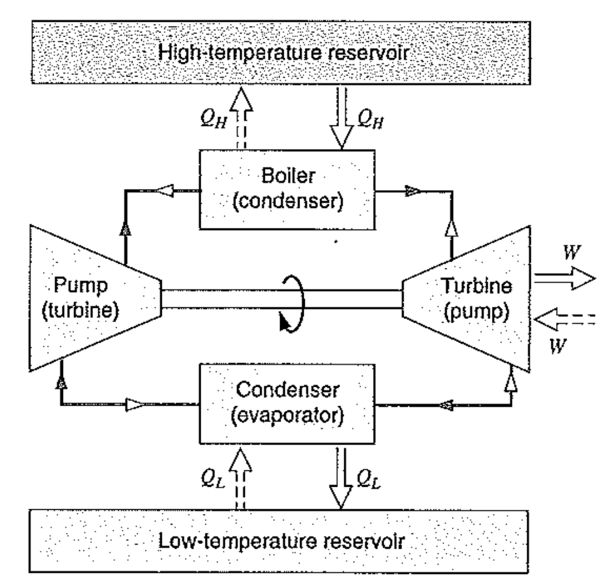

[Thermodynamics] Ch 5. Carnot cycle - reversibility
이전 시간에 2가지 법칙을 통해서,
효율 100% 열기관은 못 만든다는 것을 확인하였다.
Q. 그렇다면? 정확히 어떤 열기관이 효율이 가장 좋을까?
정답을 알기위해서
Reversible
을 먼저 이해해야 한다.
영어로 Reverse : 되돌리다
Reversilbe process라고 한다면, '되돌릴 수 있는 과정'
하지만, 조건이 있다.
되돌리는데 주변의 상황이 모두 정확히 동일
해야한다.
무슨 말이냐면,
State 1 -> 2로 이동시키고,
State 2 -> 1
로 되돌렸을 때,
처음 상태랑 정확히 동일해야한다.
감을 잡기위해서 예시 를 살펴보자.
![[Thermodynamics] Ch 5. Carnot cycle - reversibility](./images/img-001.png)
위 그림에서, 실린더가 고정되어있던 압축 Gas의 핀을 뽑으면,
높은 압력의 기체는 위로 올라갈 것이다.
State 1: 압축 고정 상태
State 2 : 위로 올라간 팽창 상태
그리고 다시 핀을 꽂기위해서 밑으로 일을 해주면??
열이 방출 된다 why?????
맨처음에 gas가 실린더를 밀어 올라갔을때의 일
<
밑으로 내려주기위한 Work
후자, Work에서의 압력이 더 크기때문에,
처음에 실린더가 한일 < 나중에 밑으로 눌러준 일
Cycle W <0
결국, 열역학 제 1법칙에 의해 Cycle Q < 0
![[Thermodynamics] Ch 5. Carnot cycle - reversibility](./images/img-002.png)
따라서, 열이 방출 된다는 것을 알 수 있다.
여기서, 실린더가 State 1 -> 2 ->1 로 이동할때,
주변 환경에 열을 주었다. 즉, 원래 상태로 되돌아가기 위해서, 주변환경에 영향을 주었다.
이런경우,
Irreversible process
라고 부른다.
이제 반대로 reversible 예시를 살펴보자.
![[Thermodynamics] Ch 5. Carnot cycle - reversibility](./images/img-003.png)
그림처럼, 벽돌을 조금씩 빼면, 압력이 조금씩 줄어들어 위로 팽창 할 것이다.
그리고 다시 벽돌을 위에 쌓으면 원래상태로 돌아갈 것이다.
즉, 원래 상태로 돌아가는 과정이 State 1->2 = State 2-> 1
정확히 동일하다. -> Reversible process.
그렇다면??? 아까랑 도대체 무슨 차이일까? Irreversible 을 만든 건 무엇?
Irreversibility가 일어나는 4가지 경우의 수.
- Friction
- Unrestrained Expansion
- Heat transfer through a finite Temperature difference
- Mixing
자 이제 장착한 개념을 가지고 과학자 Carnot는
Carnot cycle
이라는 효율이 가장 좋은 열기관을 정의하였다.

핵심은 모든 과정이
Reversible process
라는 것이다.
1. 열을 전달 받을때, Boiler or condensor 온도 = reservior 온도
등온 열전달로 -> reversible
2. 일을 하고 받을때도, 단열 과정으로 -> Reversible process
왜왜 그렇다면 이 경우가 효율이 가장 좋을까???
카르노는 이를 증명하기 위해 두가지 명제를 언급한다.
1. Reversible cycle효율 > Irreversible Cycle 효율
2. 모든 Reversible cycle의 효율은 동일하다.
![[Thermodynamics] Ch 5. Carnot cycle - reversibility](./images/img-005.png)
왼쪽 irrversible Engine 효율 > 오른쪽 reversible engine 효율 이라고 가정하자.
In that case, W irr > Wrev
두 엔진은 같은 엔진이지만, irreversibility만 다르다.
(따라서, reversible engine인 경우는 뒤집어서 역방향을 할 수 있는것)
전체적으로,
점선으로 된 System
으로 봤을때, 하나의 reservior(Low T)만 가지고 일을 하는 것을 알 수 있다.
Kelvin plank statement 어기므로, 모순
따라서, Irreversible 효율 < Reversible 효율
카르노 과정을 자세히 다시 보면,
Reversible Heat transfer 을 위해서, 등온 과정에서 열전달이 일어난다.
즉, High T reservior 와 Boiler 의 온도는 같다.
Reservior과 Boiler을 하나의 Thermal system이라고 생각한다면(
온도가 같으므로
)
내부열전달 QH는 당연히 온도와 비례할 것이다.
결론적으로, 온도가 QH를 결정한다.
In the same way, Low T reservior 온도가 QL을 결정한다.
따라서, 열효율은
![[Thermodynamics] Ch 5. Carnot cycle - reversibility](./images/img-006.png)
이상기체인 경우, ψ(T L, T H) = Th/Tl로 표현 할 수 있다.
![[Thermodynamics] Ch 5. Carnot cycle - reversibility](./images/img-007.png)
이상기체 Carnot cycle P-v 그래프